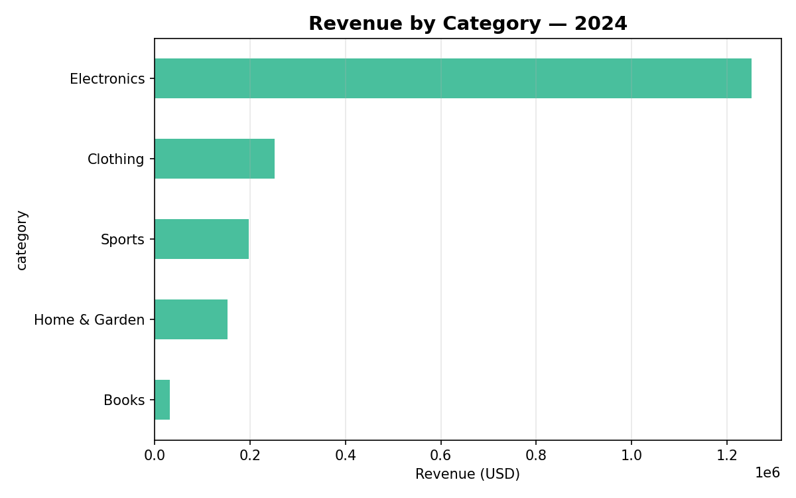
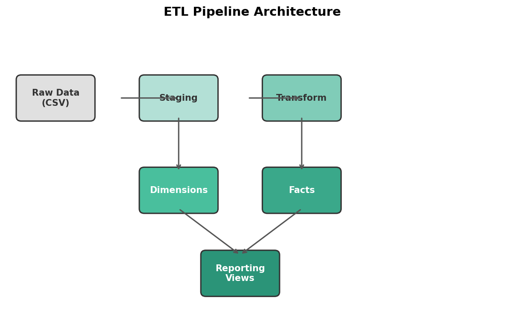
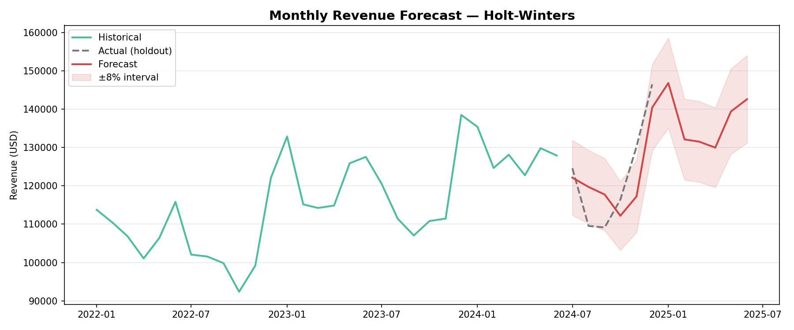

Sales Dashboard Analysis
Exploratory data analysis on retail sales data with visualizations and key business insights.
View on GitHub
I'm a Certified Public Accountant with 5+ years of experience helping businesses unlock the value hidden in their data.
From building automated dashboards to forecasting revenue, I bridge the gap between raw numbers and strategic decisions.
My clients rely on me to integrate messy data sources, automate repetitive reporting, and deliver clear, visual insights they can act on — using Power BI, SQL, and Python.
Interactive Power BI dashboards with automated data refresh, connecting multiple sources into a single source of truth.
Python and SQL pipelines that extract, transform, and load data automatically — eliminating manual work and errors.
Predictive models for revenue, demand, and KPIs using statistical methods and machine learning.
End-to-end data architecture consulting: from warehouse design to reporting layer and team enablement.

Exploratory data analysis on retail sales data with visualizations and key business insights.
View on GitHub
End-to-end ETL pipeline with staging, transformation, and reporting layers for a retail data warehouse.
View on GitHub
Time series forecasting model predicting monthly revenue with trend and seasonality decomposition.
View on GitHub
Weekly pipeline tracking integrating CRM Dynamics and SQL with automatic refresh via Power BI Service.
View Live DashboardHave a data challenge or need help making sense of your numbers? Let's talk — I'd love to help.